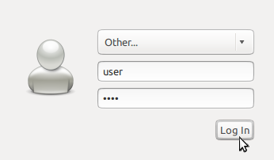

Changer de langue ou de clavier¶
Changement de Langue¶
De nombreuses langues usuelles sont incluses dans OSGeoLive. Pour basculer de langues:

Se déconnecter
Sélectionner user= »user », password= »user »
Sélectionnez une autre langue à partir du menu du panneau supérieur.
Appuyer sur le bouton Connecter
Répétez la procédure si nécessaire ou si vous souhaitez à nouveau changer de langue.
{kind=link}
Les menus du système et de nombreuses autres applications apparaîtront maintenant dans la langue choisie. Si un programme spécifique continue à s’afficher en anglais, cela signifie que le programme n’a pas de traduction disponible - merci de penser à participer à la traduction. Contactez directement le programme d’intérêt pour plus d’informations.
Pour d’autres langues consultez depuis le menu principal. (Nécessite une connexion internet).
Support du clavier¶
Le support du clavier international est installé, mais vous aurez besoin de configurer le système pour votre clavier spécifique. Pour changer les paramètres, ouvrez depuis le menu principal et cliquez sur l’onglet Input Method. Après, cliquez sur Customize active input methods et ensuite sur le bouton Select an input method. Maintenant, cliquez sur le bouton Add sur la droite pour ajouter une disposition supplémentaire et ensuite appuyez sur Close pour fermer la fenêtre IBus Preferences.
Vous pouvez maintenant cliquer sur l’icône du clavier sur la barre de menu basse du bureau pour sélectionner la disposition de clavier active.